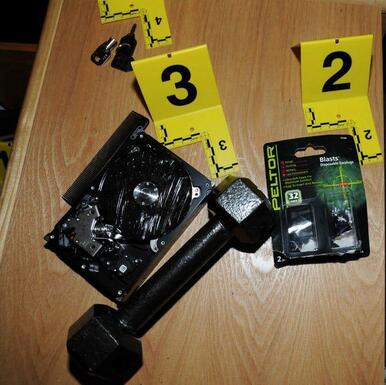

Адам Лэнза
14 декабря 2012 г. Адам Лэнза осуществил массовое убийство в начальной школе «Сэнди-Хук», погибли 27 человек. Он покончил с собой, не оставив предсмертной записки. Некоторые сведения о мотиве, подтолкнувшем Адама к бойне, вероятно, могли находиться на компьютере, который 20-летний затворник использовал в качестве одного из основных способов контакта с внешним миром.
Лэнза попытался уничтожить жесткий диск компьютера с помощью молотка и отвертки — на фото выше можно оценить состояние диска. В ФБР несколько месяцев исследовали 500-гигабайтный Seagate Barracuda, но не получили никакой информации.
Означает ли это, что «режим параноика» включается зря? Некоторые исследования показывают, что при желании можно восстановить даже критически поврежденные данные. ФБР обнаружило в доме Лэнза множество фотографий мертвых тел, видео суицидов. Также был изучен обширный цифровой след преступника, который вел на форумы с обсуждением педофилии. Психологи смогли составить полный и яркий портрет. Тратить ресурсы на извлечение дополнительных сведений уже не имело смысла.
Но представим, что на диске находится сверхсекретная информация, доступ к которой — вопрос жизни и смерти. Известно, что, размазав тонким слоем по поверхности жесткого диска коллоидную суспензию частиц Fe2O2, в отраженном свете мы увидим магнитный контраст, с помощью которого можно оценить наличие или отсутствие информации.
При 800-кратном увеличении с помощью оптического микроскопа четко различаются отдельные сервометки, несколько хуже выделяются дорожки с данными, записанные более слабым полем.
Несмотря на повреждения фрагментов дорожек записи, делающие невозможным считывание при помощи дисковода, физически информация сохранилась, что обеспечивает возможность ее восстановления. На HDD-дисках мы можем воспользоваться методом считывания остаточной намагниченности.
Таким образом, вопрос восстановления данных — это вопрос наличия необходимого оборудования (и большого желания). При наличии магнитно-силового микроскопа можно исследовать жесткий диск на субмикронном уровне. Современная наука знает примеры куда более специфичных исследований, в том числе с применением атомно-силовой микроскопии, используемой для определения рельефа поверхности с разрешением от десятков ангстрем вплоть до атомарного.